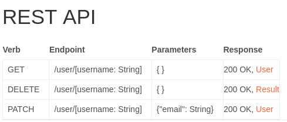
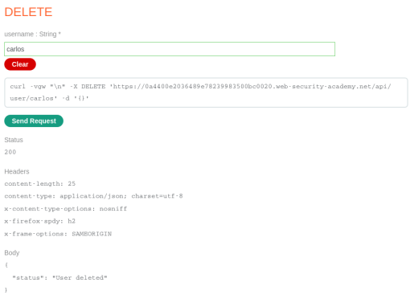

Exploiting an API endpoint using documentation
- Provided with storefront website, credentials “wiener:peter”, told to find exposed API documentation endpoint and delete user carlos
- Logged in with provided credentials
- Intercepted requests for navigating to “my account”, viewing random product, and updating email
- The request type and endpoint for updating the user email seemed unique compared to the others:
- Used GET requests on /api/user/wiener, /api/user, and /api endpoints
- /api had a 302 redirect, so navigated to /api
- Discovered REST API documentation:

- Used provided interface to delete user carlos:

- Completed lab successfully: